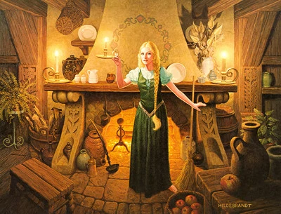
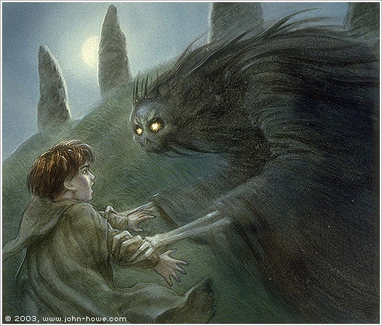
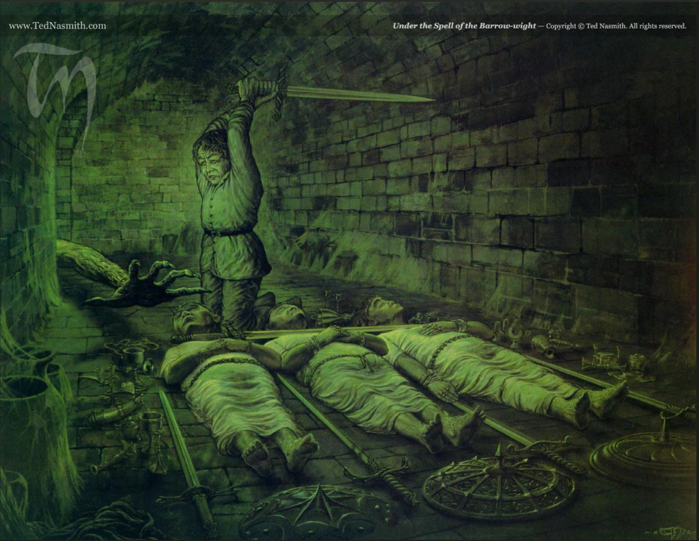

The Fog of the Barrow Downs
I’m not sure if Frodo was so enchanted by elvish beauty, but it seems he was yearning to say goodbye to Goldberry as they left Tom’s home that he wanted to double back just to say bid farewell. Alas Goldberry met them as they were leaving and Frodo could get any words out to Goldberry but a solemn bow.
As they travel through the Barrow Down they see a strange stone that stood out like a landmark. Against their better judgement, they settled down and made camp to rest and replenish their energy with food and drink. But they find themselves soon in slumber, much like strange magic that made them sleep by Old Man Willow. Our hobbits wake to a mist that surrounds them like nebulous walls of atmosphere.
The fog was colder and denser the more they traveled down the valley. They came across a gate-like opening. Seeing it as a way out they surrender themselves to this hope of salvation from the damp fog.
Frodo led the way, the group now in single file. But it wasn’t before long that he led track of the others. In his panic, Frodo loses his pony off into the darkness. He hears voices - ‘hoy Frodo! Hoy! Help help!’
In the darkness the voice and Frodo finally meet up. Before Frodo lies a dark figure, tall and shadowy - ‘Here. I am waiting for you’
Barrow-wight? At least that is what Frodo thinks they are. Although he is scared, Frodo tries to muster his courage. Darkness gives away to faint green glow. Frodo sees his companions - Merry, Pippin, and Sam lying down seemingly unconscious but with many treasure, jewels, and trinkets by their sides and long naked sword across the flesh of their necks.
A bony hand moved on it's own walking on its fingertips towards that sword. Frodo, afraid, dreamed a situation where he puts on the ring to escape and grieves his friends demise.
He wells up his courage and grabs a short sword (likely from the treasure lying around) and strikes the moving hand destroying the sword in the process. A shrieking sound and darkness all around Frodo, the situation remains dire.
Frodo recalls the song Tom had taught the to summon him in case of trouble. In desperation, Frodo calls out to Tom with the song:
“Ho! Tom Bombadil, Tom Bombadillo! By water, wood and hill, by reed and willow, By fire, sun and moon, harken now and hear us! Come, Tom Bombadil, for our need is near us!”
And just like that, in mere moments, Tom comes busting through the Barrow Downs like kool-aid man. The light seeps into the darkness of the downs and Tom gives the evil spirits a good roundhouse kick and karate chop (not really) He does so figuratively with his melodic voice and magical songs that the wights are pushed back into the darkness.
He and Frodo take the other unconscious hobbits into a safer area for them to recuperate. With them, they loot some of the treasure they found while in the downs.
When the other hobbits come to, Tom hands them some seemingly magical or at least magic-made weapons. Ornate and created with master craftsmanship, these swords could come in play later when the hobbits need to defend themselves from greater threats.
Tom helps guide the hobbits to the edge of his territory, he will not pass the borders as he must attend to his home and be with Goldberry. As to whether or not he is as powerful outside his territory remains to be seen.
He suggests the hobbits to visit an inn called the Prancing Pony in Bree-hill. It seems that is the next pitstop on this journey.